Otto Visser & Partners accountants · versie 4.0 · 26 juli 2026
Inhoud
Inleiding
Inloggen, tweefactor en wachtwoord
Het dashboard
Cliënten beheren en importeren
Een verzoek aanmaken met automatische herkenning
Betrouwbaarheid: drie niveaus, u kiest
Velden plaatsen, ondertekenaars en volgorde
Versturen en opvolgen
Zelf ondertekenen vanuit kantoor
Een ondertekenaar overdragen
Zo tekent de cliënt
Ondertekenen met uw beroepscertificaat
Wat de cliënt krijgt als het klaar is
Het auditrapport
Als een e-mail niet aankomt
Een document controleren op echtheid
Archiveren en het opruimen van bestanden
Berichtsjablonen
Gebruikers beheren en het beroepscertificaat
Beveiliging in het kort
Vragen die cliënten stellen
Hoofdstuk 1
Inleiding
Met het ondertekenportaal stuurt u documenten ter ondertekening naar cliënten. Zij tekenen in hun browser, zonder account en zonder printer. U ziet in één oogopslag wat nog open staat.
Wat het portaal voor u doet
Word- en PDF-bestanden importeren; Word wordt automatisch omgezet.
Het documenttype herkennen en titel en begeleidend bericht al invullen.
Tekenvakken plaatsen en de volgorde bepalen, ook als u of een collega mee moet tekenen.
De cliënt uitnodigen, zijn identiteit controleren met een code per e-mail of sms, en automatisch herinneren.
Het resultaat vastleggen: een ondertekencertificaat in het document, een apart auditrapport, en desgewenst een digitaal zegel.
Hoe u deze handleiding leest
Hoofdstuk 2 t/m 8 is het dagelijkse werk, van inloggen tot versturen. Hoofdstuk 9 t/m 12 gaat over ondertekenen: door u, door een collega, en door de cliënt. Hoofdstuk 13 t/m 17 gaat over wat er daarna gebeurt: wat de cliënt krijgt, hoe echtheid te controleren is, en hoe archiveren werkt. De laatste hoofdstukken zijn naslag.
Nieuw in deze versie. U kiest nu per verzoek hoeveel bewijskracht u wilt (hoofdstuk 6), elk afgerond verzoek levert een apart auditrapport op (hoofdstuk 14), en zelf ondertekenen vraagt om een verse code uit uw authenticatie-app (hoofdstuk 9).
Hoofdstuk 2
Inloggen, tweefactor en wachtwoord
U logt in met uw e-mailadres en wachtwoord, plus een code uit een authenticatie-app. Die tweede stap is verplicht.
Het inlogscherm, met onderaan de link “Wachtwoord vergeten?”
De eerste keer
Log in met het wachtwoord dat u van de beheerder heeft gekregen; u stelt direct een eigen wachtwoord in.
Scan de QR-code met een authenticatie-app (Microsoft Authenticator, Google Authenticator, 1Password — wat u al gebruikt).
Voer de code van zes cijfers in om te bevestigen.
Herstelcodes
Bij het instellen van tweefactor krijgt u eenmalig een set herstelcodes. Bewaar die op een veilige plek: raakt u uw telefoon kwijt, dan logt u met zo’n code toch in. In Instellingen ziet u hoeveel codes u nog over heeft en kunt u een nieuwe set genereren.
Wachtwoord vergeten
Klik op Wachtwoord vergeten? en vul uw e-mailadres in. U krijgt een link die eenmalig werkt en na korte tijd verloopt. Werkt uw authenticatie-app niet meer en heeft u geen herstelcodes, dan kan een beheerder uw tweefactor opnieuw instellen (hoofdstuk 19).
Codes zijn eenmalig. Een code uit uw app werkt maar één keer — ook binnen dezelfde halve minuut. Typt u dezelfde code een tweede keer in, dan wordt hij geweigerd met de melding dat u op de volgende moet wachten. Dat is bewust: zo bewijst een code dat u de telefoon nu in handen heeft.
Hoofdstuk 3
Het dashboard
Het dashboard is uw werklijst. U ziet welke verzoeken open staan, wat er aandacht vraagt, en hoeveel tijd er nog op de klok staat.
Het dashboard met filters, zoekbalk en de kolom “Verloopt”.
Filters per status: concept, verzonden, gedeeltelijk, ondertekend.
Zoeken op titel of naam van de cliënt.
Verloopt laat zien hoeveel dagen de tekenlink nog geldig is, met kleur zodra het kort dag wordt.
Aandacht nodig filtert op wat vastloopt: niet bezorgde uitnodigingen en verzoeken die al dagen stil liggen.
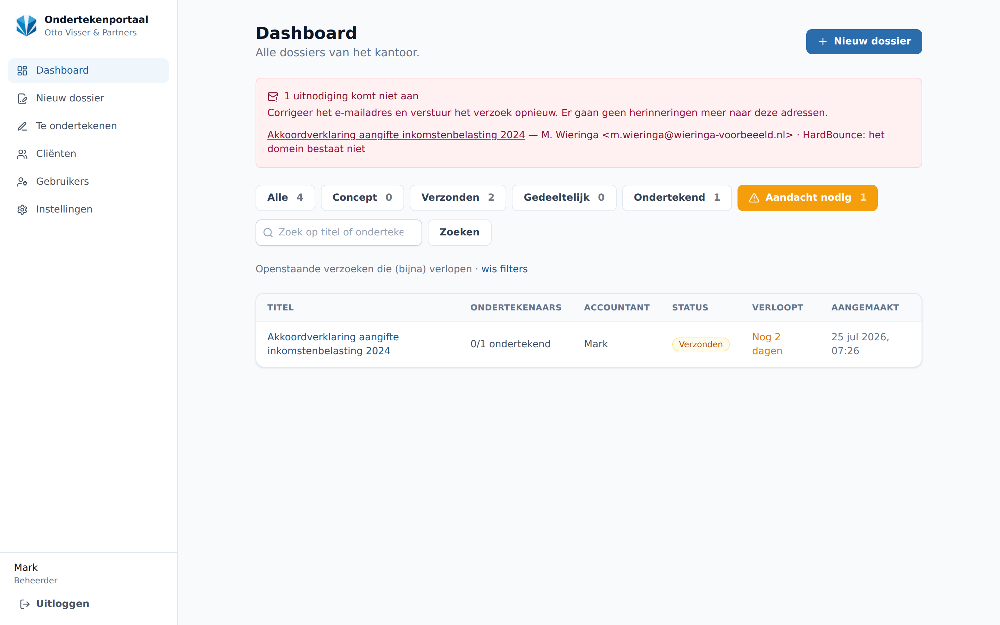
Alleen de verzoeken die aandacht vragen.
Meldingen bovenaan. Is een uitnodiging niet bezorgd, of wacht een stuk al dagen op uw eigen handtekening, dan staat dat bovenaan het dashboard — met een directe link naar het dossier.
Hoofdstuk 4
Cliënten beheren en importeren
In de cliëntendatabase bewaart u naam, e-mail en telefoon. Bij het versturen vult het portaal die gegevens automatisch in.
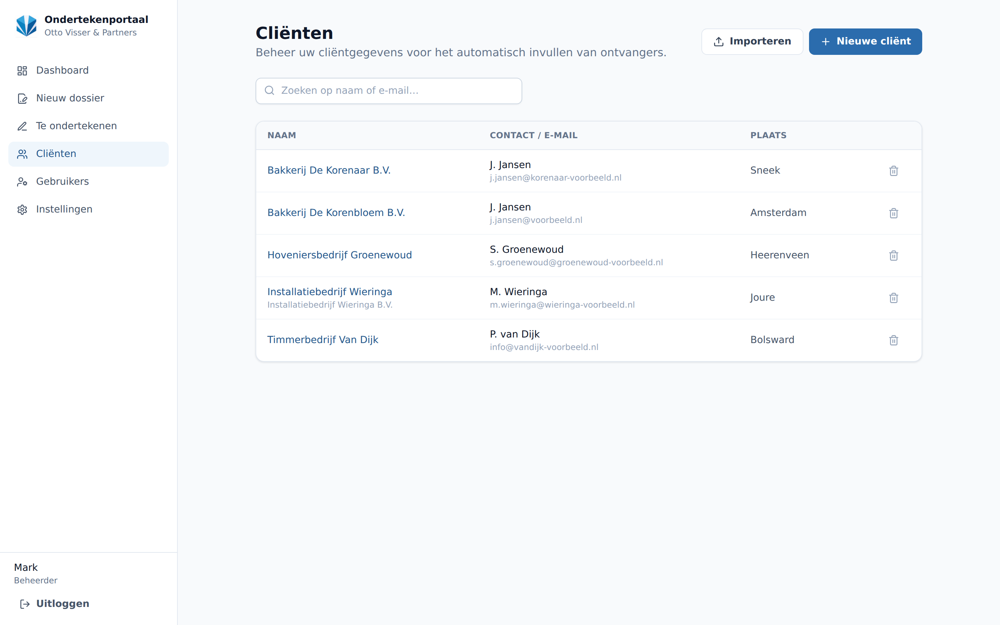
Overzicht van cliënten.
Een cliënt vastleggen
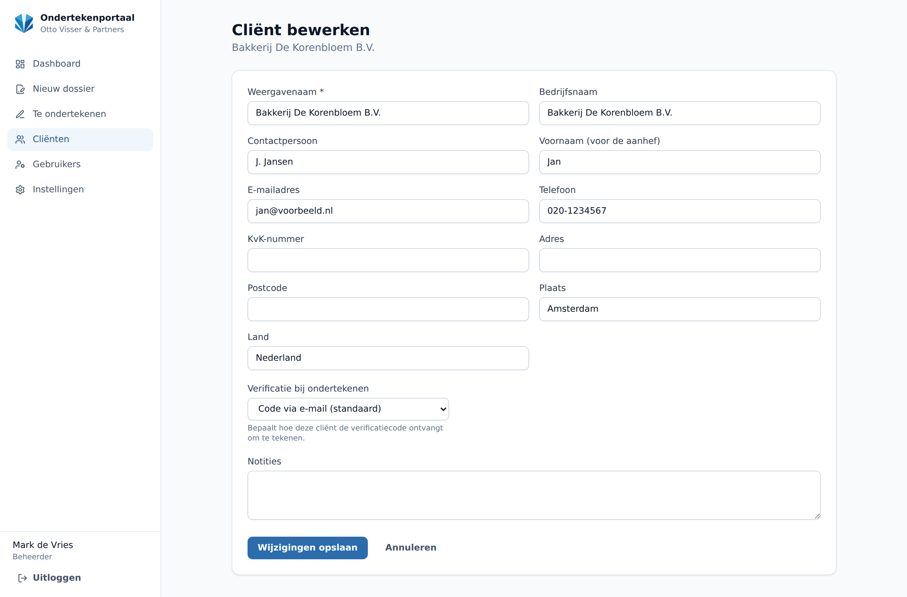
Een cliënt bewerken, met het veld Voornaam en de verificatiemethode.
Voornaam wordt gebruikt voor een nette aanhef in het begeleidend bericht.
Klantnummer en archiefmap bepalen waar getekende stukken belanden (hoofdstuk 17).
Verificatiemethode: krijgt deze cliënt zijn code per e-mail of per sms? Kiest u sms, vul dan een mobiel nummer in.
Wanneer sms? Een code per sms gaat naar een ander kanaal dan de uitnodiging zelf. Wie toegang heeft tot de mailbox van de cliënt heeft daarmee nog niet de code. Voor stukken die er echt om vragen is sms dus een stap sterker; voor het gewone werk volstaat e-mail.
Importeren uit Excel
Importeren met een voorbeeldbestand.
Download het voorbeeldbestand, vul het en upload het. U ziet eerst een voorbeeldweergave van wat er gaat gebeuren; bestaande cliënten worden bijgewerkt in plaats van gedupliceerd.
Hoofdstuk 5
Een verzoek aanmaken met automatische herkenning
Kies de bestanden; het portaal herkent wat het is en vult titel en bericht in.
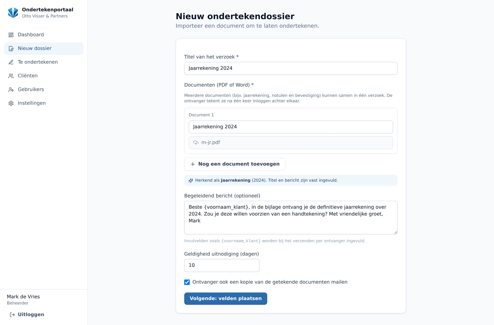
Herkend als “Jaarrekening (2024)”; titel en bericht zijn vast ingevuld.
PDF en Word (.doc, .docx) worden ondersteund; Word wordt omgezet naar PDF.
Maximaal 20 documenten per verzoek, elk tot 18 MB.
Herkend worden onder meer jaarrekening, notulen AVA, bevestiging bij de jaarrekening, akkoordverklaring IB en VPB, en opdrachtbevestiging — met het boekjaar erbij.
Staat er geen tekstlaag in het bestand (een scan), dan leest het portaal het met tekstherkenning.
Meerdere documenten
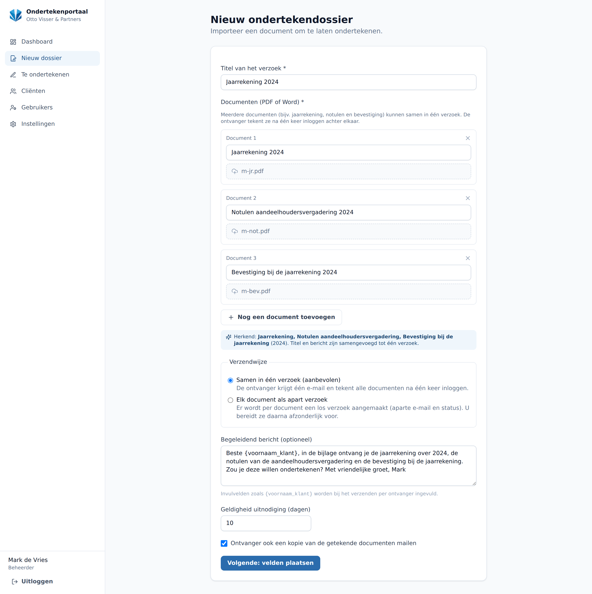
Drie documenten in één verzoek; titel en bericht zijn samengevoegd.
Horen stukken bij elkaar (jaarrekening, notulen en bevestiging), dan stelt het portaal één gecombineerde titel en tekst voor. U kiest zelf:
Alles in één verzoek — de cliënt tekent alles in één keer. Meestal wat u wilt.
Elk document apart — elk stuk krijgt zijn eigen link, status en verloopdatum.
Geldigheid van de link
U stelt in hoeveel dagen de tekenlink geldig blijft (standaard 10, maximaal 90). Verloopt hij, dan kunt u het verzoek met één klik opnieuw versturen met een verse link.
Hoofdstuk 6
Betrouwbaarheid: drie niveaus, u kiest
Niet elk stuk vraagt dezelfde bewijskracht. Een akkoordverklaring bij een IB-aangifte en een jaarrekening die naar de bank gaat zijn niet hetzelfde. Daarom kiest u per verzoek.
De keuze staat op de dossierpagina onder Betrouwbaarheid. U kunt hem wijzigen tot het moment van versturen.
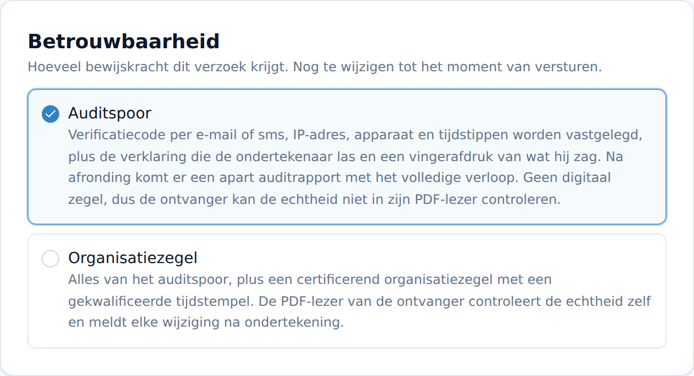
De keuze per verzoek, met bij elk niveau wat het oplevert. Hier is alleen het organisatiezegel beschikbaar naast auditspoor.
Auditspoor
Het dagelijkse niveau. De cliënt bevestigt zijn identiteit met een code per e-mail of sms vóórdat hij het document ziet. Vastgelegd worden: het tijdstip van versturen, openen, verifiëren en ondertekenen, het IP-adres, het apparaat, de verklaring die hij las, en een vingerafdruk van precies de versie die hij op zijn scherm had. Na afronding komt er een auditrapport met het volledige verloop (hoofdstuk 14).
Wat hier niet bij zit: een digitaal zegel. De ontvanger kan de echtheid dus niet in zijn PDF-lezer laten controleren.
Organisatiezegel
Alles van het auditspoor, plus een digitaal zegel van het kantoor met een tijdstempel van een onafhankelijke dienst. Adobe Reader en andere lezers controleren dat zelf en melden elke wijziging na ondertekening. Kies dit voor stukken die naar een bank, notaris of andere derde gaan.
Beroepscertificaat
Alles van het auditspoor, met daarbovenop de gekwalificeerde handtekening van de accountant op persoonlijke titel, met beroepstitel. Alleen nodig waar dat is voorgeschreven; de accountant moet zelf autoriseren (hoofdstuk 12).
Welke kies ik? Voor akkoordverklaringen, opdrachtbevestigingen en interne stukken is Auditspoor ruim voldoende — dat is de reden dat het het standaardniveau kan zijn. Gaat het stuk naar buiten en moet een derde partij zelf kunnen vaststellen dat het echt is, kies dan Organisatiezegel. Beroepscertificaat gebruikt u alleen als de regels het vragen.
Niet elk niveau is altijd beschikbaar. Een zegel of beroepscertificaat vraagt een certificaat dat de beheerder eerst moet instellen. Staat dat er niet, dan ziet u alleen Auditspoor, met een regel die uitlegt wat eraan ontbreekt. Auditspoor werkt altijd — het heeft geen certificaat, geen externe dienst en geen internetverbinding naar buiten nodig.
Hoofdstuk 7
Velden plaatsen, ondertekenaars en volgorde
In het voorbereidscherm bepaalt u wie tekent, in welke volgorde, en waar de handtekening komt.
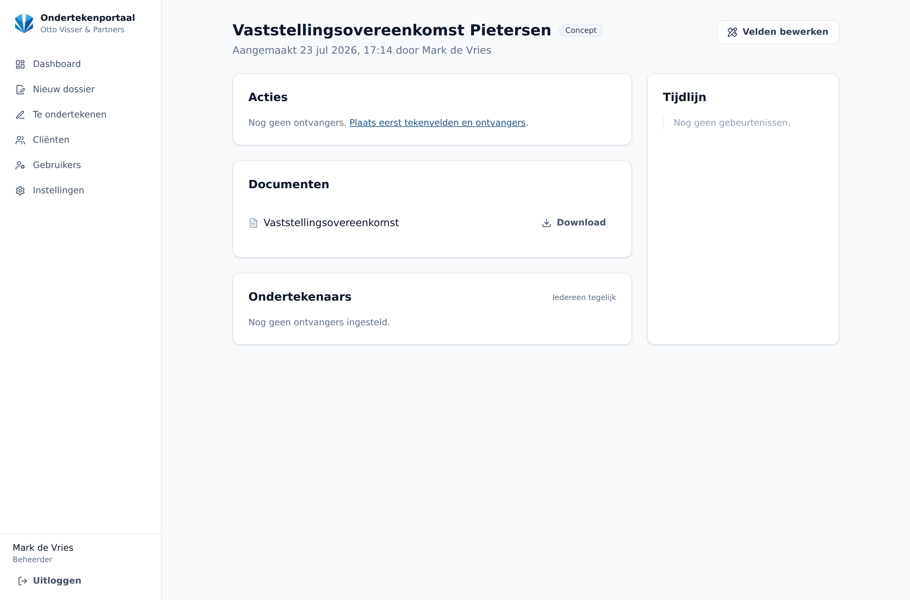
De volgorde instellen, ondertekenaars kiezen en tekenvakken plaatsen.
Ondertekenaars toevoegen
Cliënt — kies uit de cliëntendatabase; naam, e-mail en verificatiemethode worden ingevuld.
Kantoor — u of een collega. Die tekent ingelogd in het portaal, zonder e-maillink (hoofdstuk 9).
De volgorde
Iedereen tegelijk — alle ondertekenaars krijgen meteen bericht. Het snelst.
Eén voor één — de volgende krijgt pas bericht als de vorige klaar is. Gebruik dit als iemand pas mag tekenen ná een ander, bijvoorbeeld de accountant na de bestuurders.
Kantoorondertekenaars staan in dezelfde rij als cliënten en krijgen dus ook een positie. U kunt de accountant dus op plek 1 zetten en de cliënt op 2, of omgekeerd — wat het beste past.
Tekenvakken
Sleep per ondertekenaar een vak op de plek waar zijn handtekening moet komen. Bij meerdere documenten doet u dat per document. Vergeet u iemand een vak te geven, dan waarschuwt het portaal bij het versturen.
Tweefactor is vereist om te kunnen tekenen. Een collega zonder ingestelde tweefactor kunt u niet als kantoorondertekenaar toevoegen; dat meldt het portaal direct. Dat is bewust hier en niet later: zou het pas blijken als hij aan de beurt is, dan heeft de cliënt al getekend en zit het verzoek vast.
Hoofdstuk 8
Versturen en opvolgen
Vanuit het dossieroverzicht verstuurt u het verzoek en volgt u de voortgang.
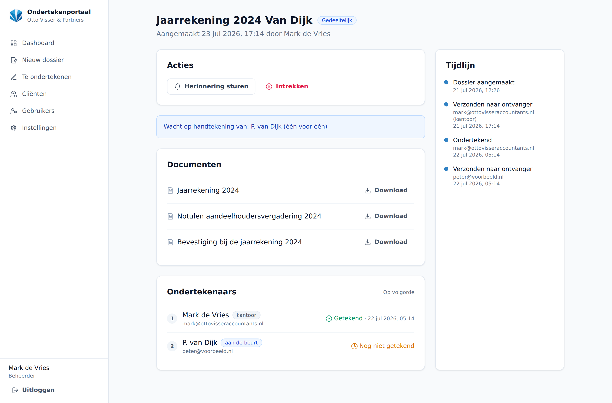
Dossierdetail: acties, documenten, ondertekenaars en de tijdlijn. De keuze voor Betrouwbaarheid staat boven de ondertekenaars.
De tijdlijn toont elke stap: aangemaakt, verzonden, geopend, geverifieerd en ondertekend, met datum en tijd.
Bij Ondertekenaars ziet u wie al getekend heeft en bij wie het nu “aan de beurt” is.
Met Herinnering sturen geeft u een nette reminder; met Intrekken stopt u het verzoek.
Onder Documenten downloadt u op elk moment de actuele versie.
Automatische herinneringen
Het portaal herinnert zelf, op dag 5 en dag 12 na het versturen, aan wie nog moet tekenen. Zou een herinnering een link opleveren die binnen een dag verloopt, dan wordt hij overgeslagen — een reminder met een dode link is erger dan geen reminder. Verloopt een verzoek, dan krijgt u bericht en kunt u het met een verse link opnieuw versturen.
Handmatig herinneren blijft mogelijk. Alleen wie nu aan de beurt is krijgt hem, en alleen als het e-mailadres bereikbaar is (hoofdstuk 15).
Hoofdstuk 9
Zelf ondertekenen vanuit kantoor
Moet u of een collega zelf tekenen? Dat doet u ingelogd, zonder e-maillink, via Te ondertekenen.
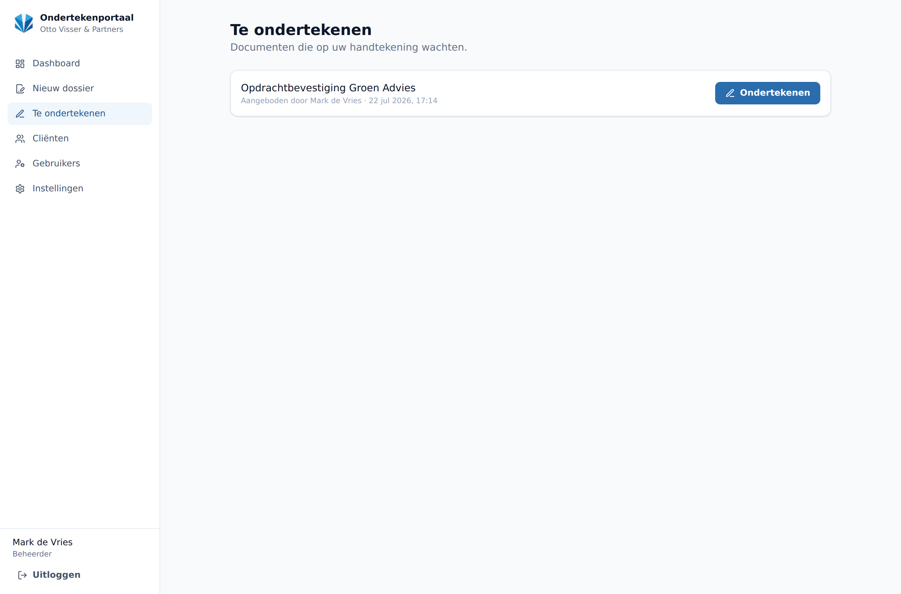
De wachtrij met dossiers die op uw handtekening wachten.
Zo werkt het
Open Te ondertekenen in het menu; hier staan de stukken die op u wachten.
Open het dossier en controleer de documenten.
Lees de verklaring boven de knop en plaats uw handtekening (die u in Instellingen heeft ingesteld, of teken hem ter plekke).
Voer een verse code uit uw authenticatie-app in.
Klik op Ondertekenen. Bij “één voor één” krijgt de volgende ondertekenaar automatisch bericht.
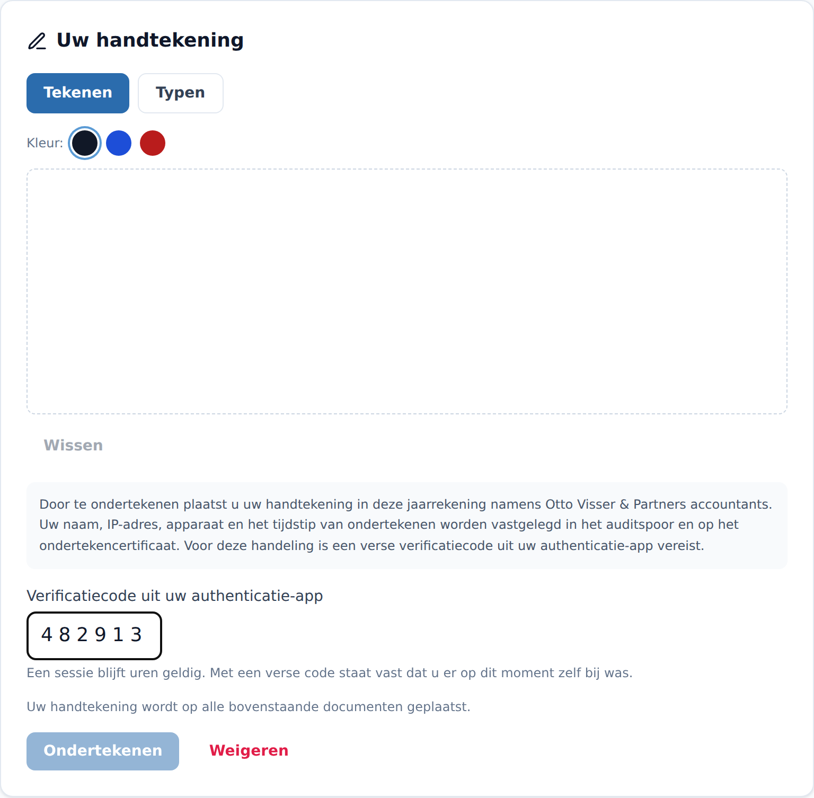
De verklaring die u leest, en het veld voor de verse code uit uw authenticatie-app.
Waarom die code?
Een sessie in het portaal blijft uren geldig. Wie langsloopt bij een onvergrendelde laptop zou anders namens u kunnen tekenen. Met een verse code staat vast dat u er op dát moment zelf bij was. Bewust géén wachtwoord: dat vult uw browser in, en dan bewijst het niets over het moment.
Vijf pogingen, en dan alleen dit stuk. Typt u vijf keer een verkeerde code, dan wordt deze ondertekening geblokkeerd — niet uw account. U kunt gewoon blijven werken; een beheerder geeft de ondertekening weer vrij. Let op: na een mislukte poging is het codeveld leeg, want u heeft een verse code nodig. Dezelfde code nog eens intypen werkt niet.
Dubbelklikken kan geen kwaad. Is uw handtekening al gezet, dan doet een tweede poging niets. Er komt nooit een dubbele stempel op.
Hoofdstuk 10
Een ondertekenaar overdragen
Staat een stuk te wachten op een collega die op vakantie of ziek is? Draag de ondertekening over. Geef nooit uw inloggegevens weg.
Zo doet u het
Open het dossier en zoek de kantoorondertekenaar in de lijst.
Klik op Overdragen onder zijn naam.
Kies een collega. Wie geen tweefactor heeft ingesteld staat er grijs bij en kan niet worden gekozen.
De nieuwe ondertekenaar krijgt bericht dat er iets op hem wacht.
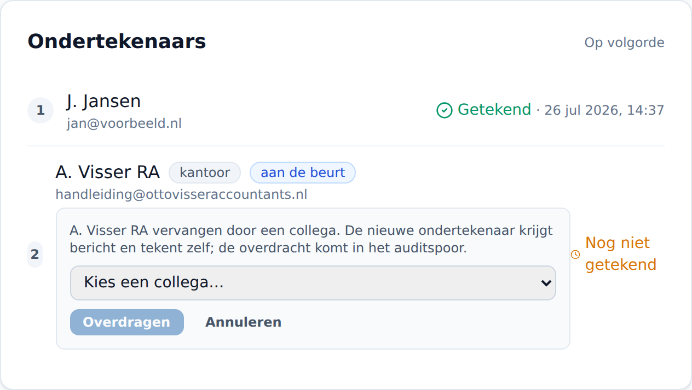
Kies een collega. Wie geen tweefactorauthenticatie heeft, kan niet worden gekozen.
Wat er gebeurt
Het portaal legt in het auditspoor vast van wie naar wie is overgedragen en door wie. De nieuwe ondertekenaar begint schoon: hij ziet zelf de documenten, leest zelf de verklaring en tekent met zijn eigen code. De vastlegging van zijn voorganger wordt niet overgenomen — dat zou een onjuist beeld geven van wie wat heeft gezien.
Alleen de eigenaar van het dossier of een beheerder mag overdragen.
Waarom niet gewoon even inloggen als iemand anders? Dan staat er straks een handtekening op naam van iemand die er niet bij was, en dat is precies wat het auditspoor hoort uit te sluiten. Bovendien is het niet meer terug te draaien. Overdragen kost tien seconden en houdt het verhaal kloppend.
Hoofdstuk 11
Zo tekent de cliënt
De cliënt heeft geen account nodig. Via de link in de e-mail komt hij op een beveiligde pagina.
De cliënt opent de link en vraagt een verificatiecode aan. Die gaat naar het e-mailadres of het mobiele nummer dat u heeft vastgelegd; op het scherm staat gedeeltelijk afgeschermd waar hij naartoe gaat.
Na het invoeren van de code worden de documenten zichtbaar. De code is 10 minuten geldig en er zijn maximaal vijf pogingen.
De cliënt tekent per document in het vak Teken hier, zet onderaan zijn handtekening (tekenen of typen) en klikt op Ondertekenen.
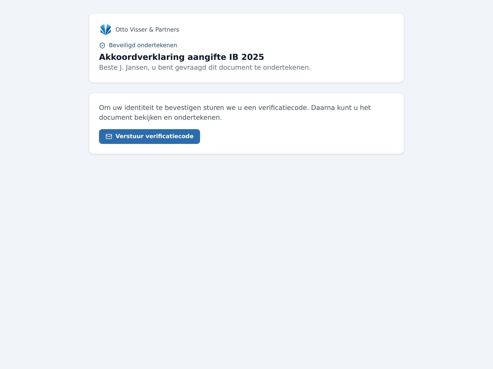
Stap 1: de cliënt bevestigt zijn identiteit met een verificatiecode.
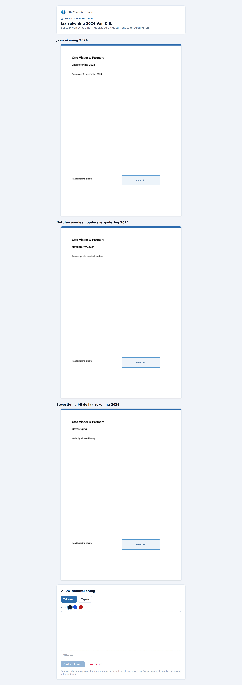
Stap 2: alle documenten met tekenvakken en het handtekeningveld onderaan.
Weigeren
De cliënt kan ook niet ondertekenen en daarbij een reden opgeven. Het verzoek wordt dan afgesloten als geweigerd, u krijgt bericht, en de reden staat in de tijdlijn. Een geweigerd verzoek is niet te heropenen: u maakt een nieuw verzoek aan.
Vóór alles: de code. Zonder geldige verificatiecode ziet de cliënt geen enkele documentinhoud — ook geen voorbeeldweergave. Wie de link onderschept maar niet bij de mailbox of telefoon kan, komt niet binnen.
Hoofdstuk 12
Ondertekenen met uw beroepscertificaat
Heeft u als accountant (AA of RA) een beroepscertificaat en staat het verzoek op dat niveau, dan zet u uw handtekening op persoonlijke titel — met uw beroepstitel erbij.
Wanneer komt dit langs?
Alleen bij verzoeken op niveau Beroepscertificaat (hoofdstuk 6). Zodra alle partijen hebben getekend komt het dossier op “Wacht op uw handtekening”. U ziet dat op het dashboard en boven de lijst bij Te ondertekenen. Zolang dit wacht gaat er geen voltooiingsmail naar de cliënt.
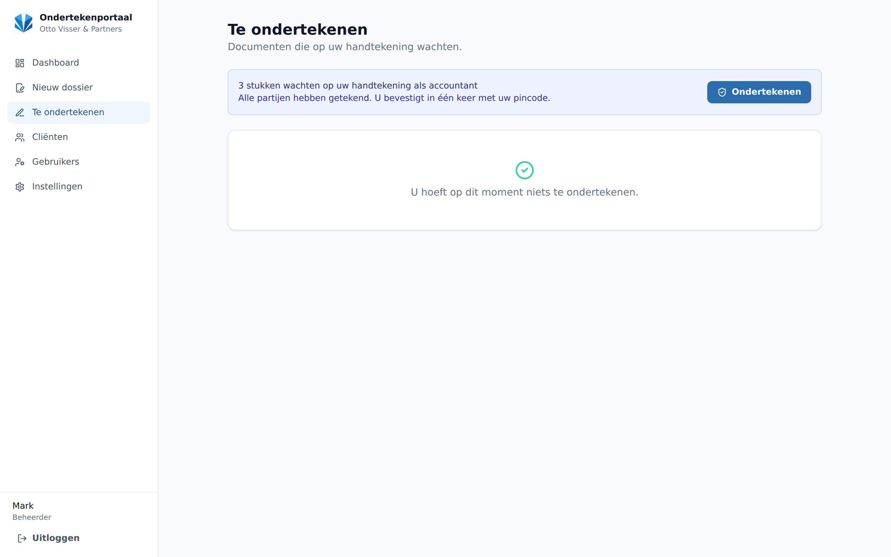
De blauwe balk laat zien hoeveel stukken op uw handtekening wachten.
Waarom dit een aparte stap is
Zodra er een digitale handtekening in een document zit, mag er niets meer aan veranderen. Het ondertekencertificaat achterin moet er dus eerst op, en dat kan pas als iedereen klaar is. Daarom tekent u niet tijdens het versturen, maar aan het eind.
Zo werkt het
Klik op de blauwe balk of ga naar Te ondertekenen → Ondertekenen met beroepscertificaat.
Vink aan wat u wilt ondertekenen.
Klik op Ondertekenen. U gaat naar uw certificaatprovider.
Bevestig daar met uw pincode in de app.
U komt terug in het portaal. De stukken zijn ondertekend, afgerond en verstuurd.
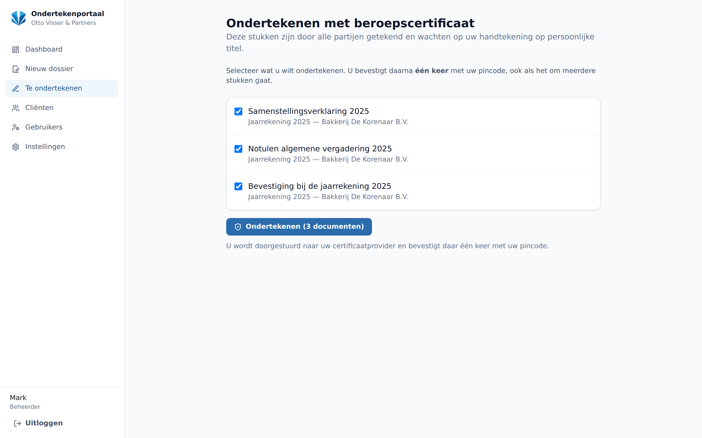
Stukken selecteren en bevestigen.
Gaat er iets mis? De bevestiging is maar een paar minuten geldig. Duurt het te lang of breekt u af, dan is er niets ondertekend en begint u gewoon opnieuw. Er blijft nooit een half ondertekende stapel achter.
Vraagt een stuk hier niet om, dan kiest u niveau Auditspoor of Organisatiezegel en wordt het direct afgerond zonder deze stap. Bij het samenstellen van een jaarrekening is een beroepscertificaat niet voorgeschreven; dat is dus niet het normale pad.
Hoofdstuk 13
Wat de cliënt krijgt als het klaar is
Zodra iedereen heeft getekend, gaat er een voltooiingsmail uit. Die mail is bewust meer dan een bevestiging: het is het eigen exemplaar van de cliënt.
In de mail zitten
Het ondertekende document als bijlage, precies zoals het is vastgelegd.
Het auditrapport als tweede bijlage (hoofdstuk 14).
Het controlegetal (SHA-256) van het document, als leesbare tekst in de mail.
Een downloadlink die 90 dagen werkt.
Waarom dat controlegetal in de mail staat
Dat getal hoort bij precies dit bestand: verandert er één letter, dan verandert het getal volledig. Doordat het in de mailbox van de cliënt staat, met zijn eigen ontvangstdatum, kunnen wij het niet meer aanpassen. Dat dekt het enige geval waarin het echt uitmaakt: dat iemand ons kantoor verdenkt. Zeg de cliënt daarom: bewaar deze e-mail met het document.
De downloadlink
De link werkt 90 dagen en mag meerdere keren worden gebruikt — een download is geen handeling die je maar één keer doet. Hij kan niet worden gebruikt om te ondertekenen. Elke download komt in het auditspoor.
Na 90 dagen verdwijnen de bestanden uit het portaal en meldt de link dat, met de verwijzing dat het document als bijlage bij de mail zat. Dat is geen storing maar het opruimen (hoofdstuk 17).
Kopie aan de cliënt uitzetten. Wilt u een verzoek zonder dat de cliënt een kopie krijgt, dan zet u dat bij het aanmaken uit. U als eigenaar krijgt de voltooiingsmail altijd.
Hoofdstuk 14
Het auditrapport
Bij elk afgerond verzoek hoort een apart PDF-bestand met het volledige verloop. Op niveau Auditspoor is dit hét bewijsstuk; bij de andere niveaus is het de leesbare onderbouwing naast het zegel.
Wat erin staat
Het verzoek — titel, kenmerk, status, wie het heeft aangeboden, en het gekozen betrouwbaarheidsniveau met uitleg.
De documenten — per stuk de vingerafdrukken en, als er een zegel op zit, het serienummer van het certificaat en het tijdstip van de tijdstempeldienst.
Per ondertekenaar — het hele verloop: verstuurd, bezorgd of niet bezorgd, geopend, code ingevoerd via e-mail of sms, ondertekend. Met IP-adres, apparaat, de letterlijke verklaring die hij las, en de vingerafdruk van de versie die híj op het scherm had.
Het volledige auditspoor — elke vastgelegde gebeurtenis met een doorlopend volgnummer, tijdstip, IP en apparaat.
De ketencontrole — de uitkomst van de controle of het spoor onaangetast is.
Twee dingen die er expres in staan
Een mislukte bezorging staat er gewoon in, met de reden. Dat is niet netjes, maar juist daar komt de discussie “ik heb het nooit gekregen” op aan; een rapport waarin dat is weggelaten is minder waard.
En het rapport zegt zelf wat het niet aantoont: het komt uit onze eigen administratie. Wie het kantoor verdenkt, heeft er niets aan — die heeft het controlegetal uit de voltooiingsmail nodig of een echt zegel. Ook staat er dat een verificatiecode controle over een mailbox of telefoon aantoont en niet de identiteit van een persoon; dat het adres bij de juiste persoon hoort, is uw vaststelling.
Waar u het vindt
Als tweede bijlage bij de voltooiingsmail, en via de downloadlink van de cliënt. Het gaat ook mee naar de archiefmap (hoofdstuk 17).
Hoofdstuk 15
Als een e-mail niet aankomt
Het portaal ziet of een uitnodiging daadwerkelijk is bezorgd. Een verzoek kan dus niet stil blijven liggen doordat het e-mailadres fout is.
Wat u ziet
Komt een uitnodiging niet aan, dan verschijnt bovenaan het dashboard een rode melding met de naam, het adres en de reden. U krijgt daarnaast een e-mail.
Wat u doet
Open het dossier via de link in de melding.
Corrigeer het e-mailadres bij de cliënt.
Verstuur het verzoek opnieuw.
Herinneren werkt hier niet. Naar een adres dat niet bestaat kunt u geen herinnering sturen; het portaal blokkeert dat bewust. Blijven mailen naar foute adressen schaadt namelijk de bezorging van al uw andere mail. Corrigeer eerst het adres.
Tijdelijke problemen
Is de mailbox van de cliënt bijvoorbeeld vol, dan probeert het portaal het na een uur automatisch nog één keer. Lukt het dan nog niet, dan krijgt u bericht.
In de tijdlijn ziet u per stap wat er met de mail is gebeurd: verzonden, afgeleverd, of niet bezorgd. Of de cliënt de mail heeft geopend ziet u soms ook, maar dat is een indicatie en geen bewijs — daarom staat het niet op het ondertekencertificaat.
Sms als uitweg. Blijft e-mail problemen geven bij een cliënt, zet dan zijn verificatiemethode op sms. De uitnodiging gaat nog wel per e-mail, maar de code komt via een ander kanaal.
Hoofdstuk 16
Een document controleren op echtheid
Wil een bank, notaris of cliënt weten of een document echt van u komt en onveranderd is? Er zijn drie manieren.
1. Het controlegetal vergelijken
Werkt bij elk niveau, ook zonder zegel. Het getal staat in de voltooiingsmail en op het ondertekencertificaat. Komt het overeen met het bestand dat iemand in handen heeft, dan is het bestand onveranderd.
2. Via het portaal
Ga naar Document controleren in het menu.
Upload het document.
U ziet of het zegel geldig is, wie het heeft gezet, wanneer, en of er na ondertekening iets is gewijzigd.
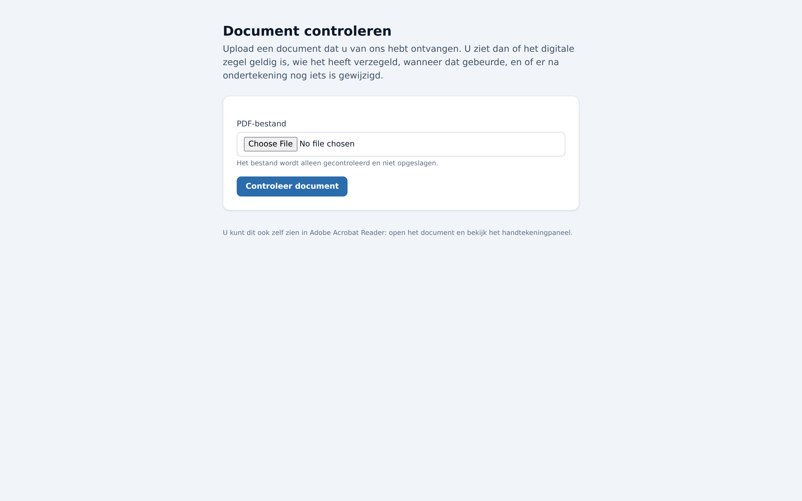
De controlepagina. Het bestand wordt alleen gecontroleerd en niet opgeslagen.
3. Via Adobe Reader
Zit er een zegel op, dan ziet wie het document in Adobe Acrobat Reader opent bovenaan een balk met de handtekeningstatus. Klik op het handtekeningpaneel voor de details. Dit werkt alleen bij de niveaus Organisatiezegel en Beroepscertificaat.
Wat er in het document zelf zit. Op de laatste pagina van elk afgerond stuk staat een ondertekencertificaat met het verloop per ondertekenaar: wanneer verstuurd, voor het eerst geopend, code ingevoerd en getekend — met IP-adres, apparaat, de gelezen verklaring en het controlegetal. Daarboven om hoeveel pagina’s en velden het gaat en welke identiteitscontrole is gedaan. Alle tijden in Nederlandse tijd. Staat er géén zegel op, dan meldt het certificaat dat met zoveel woorden; die regel is niet weg te laten.
Wat u niet moet beweren. Zeg niet “dit document kan niet worden gewijzigd”. Geen enkel PDF-formaat kan dat fysiek verhinderen. Zeg: wijzigen wordt geblokkeerd en elke wijziging is aantoonbaar. Dat is waar, en het geldt bij elke leverancier precies zo.
Hoofdstuk 17
Archiveren en het opruimen van bestanden
Het portaal is een doorvoerstation, geen archief. Het ondertekende stuk hoort in de klantmap; daar ligt de bewaarplicht.
Het archiefvinkje
Bij een afgerond dossier staat een blok Gearchiveerd. Zet u dat vinkje, dan legt het portaal vast wie dat wanneer heeft gedaan, en begint de klok voor het opruimen van de bestanden te lopen. Is een archiefkoppeling ingesteld, dan gaan het document en het auditrapport automatisch naar de klantmap; anders doet u het zelf en vinkt u het daarna af.
Twee termijnen
Bestanden: 90 dagen ná het vinkje. Daarna verdwijnen de PDF’s uit het portaal. De downloadlink van de cliënt meldt dat dan netjes.
Auditspoor: zeven jaar. De vastlegging, de vingerafdrukken en de metadata blijven staan. U kunt dus altijd aantonen wat er is gebeurd, ook als het bestand hier niet meer staat.
Nooit op de klok, altijd op het vinkje. Van een afgerond dossier verdwijnt er niets zolang het vinkje niet staat — desnoods voor altijd. Zou de klok wel verwijderen en heeft iemand vergeten af te vinken, dan is het stuk nergens meer. Een volle schijf is een acceptabel probleem; verlies niet. Om het geen geheugenspel te maken herinnert het portaal u na 60 en na 80 dagen aan wat nog niet is afgevinkt.
Vergeet dit niet in SharePoint
Bewerk het PDF daar niet. Uploaden laat de bytes intact, maar wie er in de ingebouwde editor een aantekening in maakt en opslaat, breekt de handtekening.
Versiebeheer is geen back-up. Ligt hier zeven jaar aan ondertekende stukken als enige kopie, zorg dan dat er echt een back-up op zit.
Hoofdstuk 18
Berichtsjablonen
De standaardtitel en -tekst per documenttype bepalen wat er automatisch wordt voorgevuld. Beheerders passen ze aan onder Instellingen → Berichtsjablonen.
Per type (jaarrekening, notulen, bevestiging, akkoordverklaring IB en VPB, opdrachtbevestiging) is er een titel- en berichtsjabloon.
Gebruik invulvelden zoals {voornaam_klant}, {boekjaar} en {voornaam_afzender}.
Met één klik zet u een sjabloon terug naar de standaardtekst.
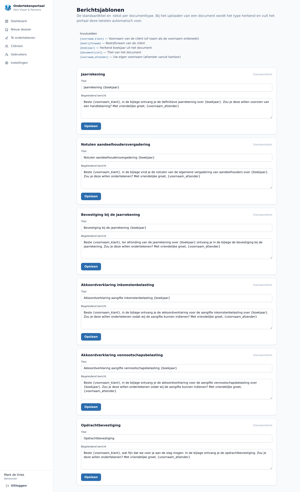
De teksten per documenttype aanpassen.
Hoofdstuk 19
Gebruikers beheren en het beroepscertificaat
Beheerders maken accounts aan voor collega’s en kunnen hen helpen bij problemen.
Ga naar Gebruikers (alleen zichtbaar voor beheerders).
Maak een medewerker aan met naam en e-mailadres; die stelt bij de eerste login zelf een wachtwoord en tweefactor in.
Kies de rol: Medewerker of Beheerder.
Per gebruiker kunt u het wachtwoord resetten en de tweefactor resetten (bij verlies van de telefoon).
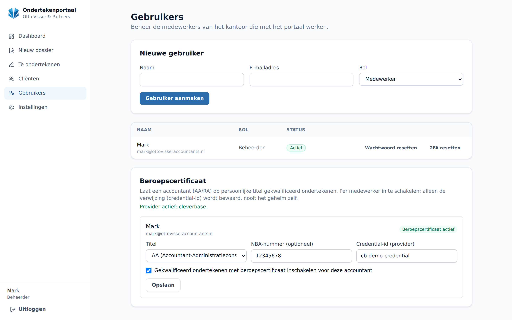
Collega’s toevoegen, rollen toekennen, en per accountant het beroepscertificaat instellen.
Tweefactor is nodig om te kunnen tekenen. Een medewerker zonder tweefactor kan geen kantoorondertekenaar zijn. Reset u iemands tweefactor, wijs hem er dan op dat hij die opnieuw instelt vóórdat er een stuk op hem wacht.
Beroepscertificaat per accountant
Onderaan dezelfde pagina zet u per medewerker het beroepscertificaat in. Daarmee kan die accountant op persoonlijke titel gekwalificeerd ondertekenen (hoofdstuk 12).
Titel: AA of RA. Deze titel komt bij de handtekening te staan.
NBA-nummer: optioneel, voor uw eigen administratie.
Credential-id: de verwijzing die u van de certificaatprovider krijgt.
Inschakelen: zet het vinkje aan om gekwalificeerd ondertekenen te activeren.
Veilig opgezet. Het portaal bewaart alleen de verwijzing, nooit uw pincode of het certificaat zelf. Dat blijft bij de provider, en u bevestigt elke ondertekening zelf in hun app.
Persoonsgebonden. Een certificaat hoort bij precies één accountant en mag nooit worden gedeeld; het portaal staat dat ook niet toe. Eindigt de inschrijving in het NBA-register of wordt die geschorst, dan trekt de provider het certificaat in. Het portaal merkt dat, zet gekwalificeerd ondertekenen voor die medewerker automatisch uit en waarschuwt de beheerders.
Hoofdstuk 20
Beveiliging in het kort
Het portaal is opgezet met beveiliging in meerdere lagen, zodat het uitvallen van één maatregel niet meteen alles blootlegt.
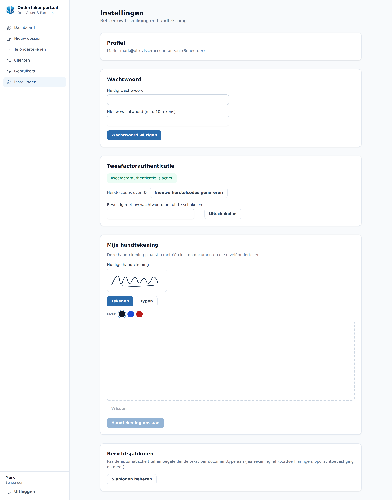
In Instellingen beheert u uw wachtwoord, tweefactor (met herstelcodes) en uw handtekening.
Versleuteld opgeslagen. Documenten worden met AES-256 versleuteld voordat ze worden opgeslagen.
Beveiligde verbinding. Al het verkeer loopt over HTTPS.
Tweefactor voor kantoor. Inloggen vereist wachtwoord én een code uit uw app; codes werken maar één keer.
Verse code bij ondertekenen. Zelf tekenen vraagt om een nieuwe code, zodat vaststaat dat u er op dat moment zelf bij was.
Identiteitscheck voor cliënten. De cliënt ziet niets voordat hij een code per e-mail of sms heeft ingevoerd.
Eenmalige links. Tekenlinks en herstellinks zijn persoonlijk, kortlevend en na gebruik ongeldig. De downloadlink is apart en kan niet worden gebruikt om te tekenen.
Auditspoor. Elke stap wordt vastgelegd met tijd, IP-adres en apparaat, in een spoor dat niet te wijzigen of te verwijderen is. Ook de tekst die de ondertekenaar las, wordt woordelijk bewaard.
Digitale verzegeling waar u die kiest. Op niveau Organisatiezegel of Beroepscertificaat krijgt het stuk een digitale handtekening met tijdstempel van een onafhankelijke dienst; dan kan iedere ontvanger zelf vaststellen dat het onveranderd is.
Controle bij downloaden. Bij elke download controleert het portaal of het bestand nog overeenkomt met wat is vastgelegd. Wijkt het af, dan wordt de download geblokkeerd.
Bezorging van e-mail. Het portaal ziet of een uitnodiging is afgeleverd en waarschuwt als dat niet zo is.
Twee bewaartermijnen. Bestanden 90 dagen na het archiefvinkje, het auditspoor zeven jaar.
Het handtekeningplaatje is weergave, geen bewijs
Uw opgeslagen handtekening is een afbeelding die bij elk stuk opnieuw wordt gebruikt. Wie een eerder ondertekend PDF heeft, kan die er in theorie uit halen. Dat is inherent aan werken met een plaatje en geldt bij elke leverancier. Het bewijs is dus niet “zijn handtekening staat erop”, maar het auditspoor: wie, wanneer, vanaf welk IP en apparaat, met welke controle, en welke verklaring hij las.
Tips. Deel uw wachtwoord, tweefactor, herstelcodes en pincode nooit. Controleer altijd het e-mailadres van de cliënt voordat u verstuurt; dat adres bepaalt wie kan tekenen. Trek een verzoek in zodra het niet meer nodig is.
Hoofdstuk 21
Vragen die cliënten stellen
Kant-en-klare antwoorden, zodat u niet hoeft te improviseren.
“Is online ondertekenen rechtsgeldig?”
Een elektronische handtekening heeft in Nederland dezelfde rechtsgevolgen als een handtekening op papier, mits de gebruikte methode betrouwbaar genoeg is voor het doel. Het portaal legt daarvoor de identiteit vast met een verificatiecode naar een door ons bevestigd e-mailadres of telefoonnummer, bewaart het volledige verloop, en legt het eindresultaat vast met een controlegetal zodat wijziging achteraf aantoonbaar is.
“Ik heb de e-mail nooit gekregen.”
Dat is na te gaan. In het auditrapport staat wanneer de uitnodiging is verstuurd en of de mailserver van de ontvanger hem heeft aangenomen — en zo niet, met welke reden. Kijk daar eerst; is het adres fout, corrigeer het en verstuur opnieuw.
“Kan iemand anders met mijn link tekenen?”
Niet zonder ook bij de mailbox of telefoon te kunnen. De link alleen laat niets zien; er is eerst een verificatiecode nodig die naar het vastgelegde adres of nummer gaat.
“Waar kan ik het document later terugvinden?”
In de voltooiingsmail: het document zit als bijlage. De downloadlink werkt 90 dagen; daarna is de mail zelf het exemplaar. Adviseer om die mail te bewaren.
“Hoe weet ik dat er later niets is veranderd?”
Vergelijk het controlegetal in de voltooiingsmail met het bestand. Zit er een zegel op, dan controleert Adobe Reader het zelf. Zo niet, dan kan het altijd via Document controleren in het portaal.
“Ik wil niet digitaal ondertekenen.”
Dat hoeft niet. De cliënt kan in het portaal weigeren met een reden, en dan handelt u het op papier af. Weigeren is geen fout en blokkeert niets.